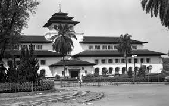
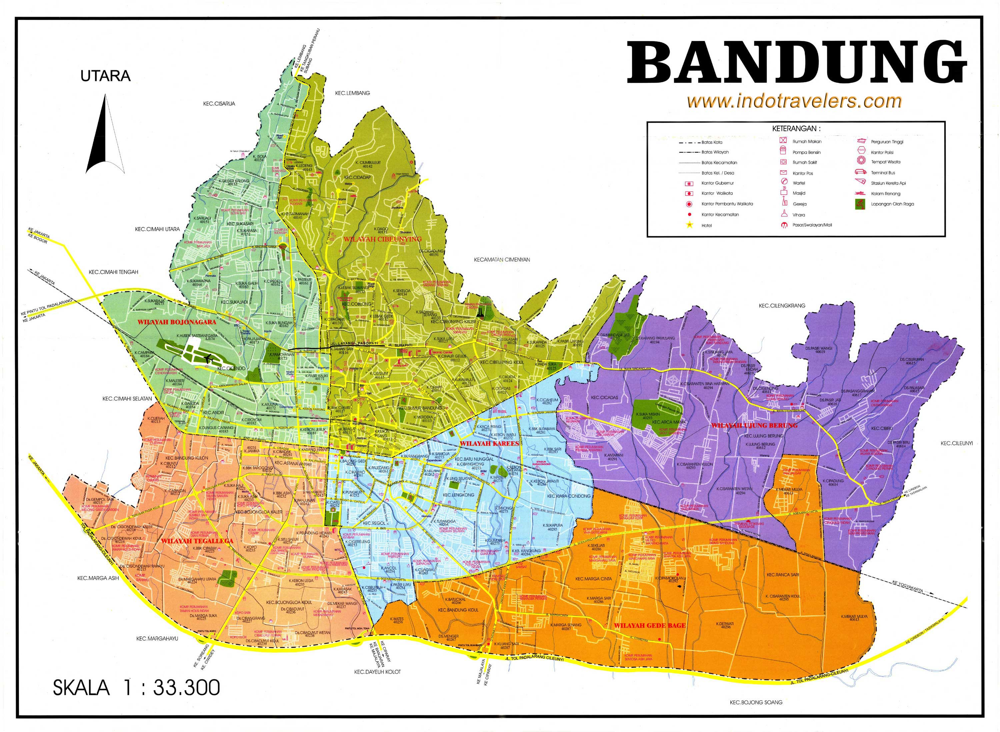
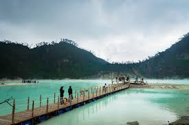
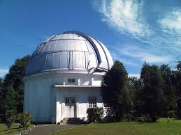
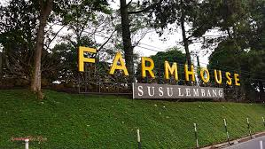

Sejarah
Sejarah adalah catatan tentang peristiwa-peristiwa penting yang terjadi di masa lalu, baik yang ditulis maupun yang diwariskan secara lisan. Ilmu sejarah mempelajari bagaimana kehidupan manusia berkembang dari waktu ke waktu, termasuk perubahan budaya, sistem pemerintahan, teknologi, dan interaksi antarmasyarakat. Dengan mempelajari sejarah, kita bisa mengetahui bagaimana dunia terbentuk dan berkembang menjadi seperti sekarang.
Lebih dari sekadar kumpulan fakta, sejarah mengajarkan kita nilai-nilai kehidupan, seperti perjuangan, keberanian, dan kebijaksanaan. Sejarah juga membantu kita memahami latar belakang dari berbagai persoalan sosial dan politik saat ini. Oleh karena itu, sejarah bukan hanya penting bagi akademisi, tetapi juga bagi seluruh masyarakat agar mampu mengambil pelajaran dan membuat keputusan yang lebih bijak untuk masa depan.

Geografis
Geografis adalah segala hal yang berkaitan dengan lokasi, bentuk permukaan bumi, dan hubungan antar tempat di muka bumi. Ilmu geografis mempelajari letak suatu wilayah, kondisi alam seperti gunung, sungai, iklim, tanah, serta bagaimana semua unsur tersebut memengaruhi kehidupan manusia. Geografi juga mencakup interaksi antara manusia dengan lingkungannya, misalnya bagaimana orang memanfaatkan sumber daya alam atau beradaptasi dengan kondisi cuaca.
Secara geografis, suatu wilayah bisa berbeda-beda karakteristiknya, seperti daerah pegunungan, pantai, hutan, atau dataran rendah. Perbedaan ini memengaruhi aktivitas penduduk, seperti jenis pekerjaan, pola permukiman, hingga kebiasaan hidup sehari-hari. Dengan memahami aspek geografis, kita dapat merencanakan pembangunan, mengelola lingkungan, dan mencegah bencana alam secara lebih efektif.

Wisata
Wisata adalah kegiatan perjalanan yang dilakukan seseorang atau kelompok orang ke suatu tempat di luar lingkungan sehari-hari untuk tujuan rekreasi, relaksasi, pendidikan, atau petualangan. Wisata bisa dilakukan di dalam negeri (wisata domestik) maupun ke luar negeri (wisata internasional). Tempat-tempat wisata bisa berupa alam, seperti pantai, gunung, dan danau, maupun buatan, seperti taman hiburan, museum, dan tempat bersejarah.
Selain memberikan hiburan dan pengalaman baru, wisata juga memiliki manfaat ekonomi dan sosial. Sektor pariwisata bisa menciptakan lapangan kerja, meningkatkan pendapatan daerah, dan memperkenalkan budaya lokal kepada wisatawan. Oleh karena itu, banyak daerah mengembangkan potensi wisatanya agar menarik lebih banyak pengunjung dan mendorong pertumbuhan ekonomi setempat. Wisata yang dilakukan secara bertanggung jawab juga dapat membantu pelestarian lingkungan dan budaya lokal.

Boscha
Boscha adalah sebuah observatorium astronomi yang terletak di Lembang, Kabupaten Bandung Barat, Jawa Barat, Indonesia. Nama resminya adalah Observatorium Bosscha, dan tempat ini merupakan observatorium tertua di Indonesia. Didirikan pada tahun 1923 oleh seorang pengusaha perkebunan asal Belanda bernama Karel Albert Rudolf Bosscha, observatorium ini menjadi pusat penelitian astronomi dan pendidikan sejak masa Hindia Belanda hingga kini. Letaknya yang berada di dataran tinggi membuatnya ideal untuk mengamati benda-benda langit karena udaranya sejuk dan minim polusi cahaya.

Observatorium Bosscha kini dikelola oleh Institut Teknologi Bandung (ITB) dan masih aktif digunakan untuk penelitian serta pendidikan astronomi. Selain menjadi pusat ilmiah, Boscha juga menjadi destinasi wisata edukatif yang populer. Pengunjung dapat melihat teleskop raksasa dan belajar tentang ilmu perbintangan. Bangunannya yang berarsitektur klasik serta suasana alam sekitarnya yang asri menjadikan Boscha sebagai tempat yang menarik bagi pelajar, peneliti, maupun wisatawan umum.
from-house

From-House adalah sebuah konsep atau istilah yang belum memiliki definisi umum atau resmi dalam bahasa Indonesia maupun dalam konteks global, sehingga maknanya bisa bervariasi tergantung pada konteks penggunaannya. Secara harfiah, “from house” berarti “dari rumah” dalam bahasa Inggris. Istilah ini sering digunakan dalam berbagai situasi, misalnya dalam konteks pekerjaan (work from house), pengiriman barang, atau produksi yang dilakukan dari rumah.